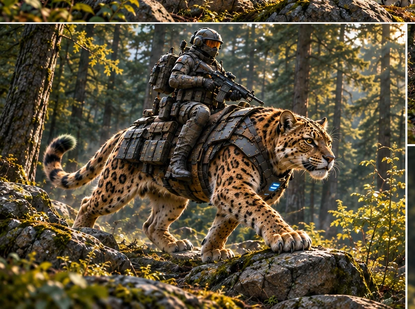
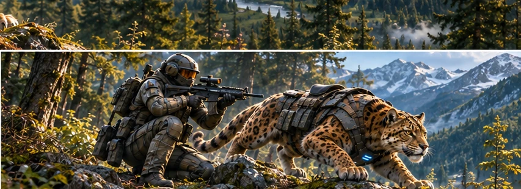
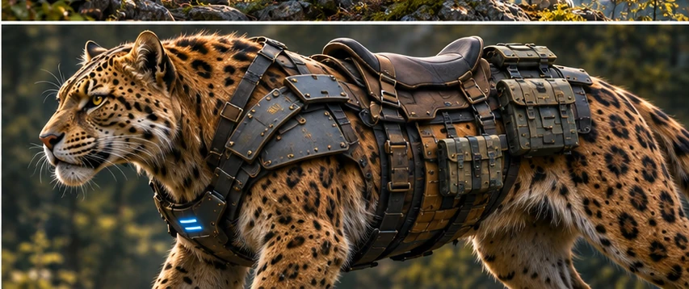

Reconnaissance and observation
Moving through difficult terrain, watching routes and detecting threats by combining human judgement with the animal's senses.
UNIVERSE GUIDE · MILITARY UNITS
A human and a great battle cat — one combat unit

Mobile fighters combining human strategic judgement with the natural abilities of a great cat.
OPERATING PRINCIPLE
The turning point on their home Plan came when people stopped treating the great cat as merely a riding animal and learned to act with it as one coordinated unit.
The cat contributes acute hearing and smell, rapid reactions, agility and the ability to move through difficult terrain. The human adds strategic thinking, target selection, modern weapons and an assessment of the wider situation. Rider and animal learn to read each other's movements and act together without losing their natural advantages.
THE GREAT CAT
The great cat is neither transport nor an armoured platform. It remains an independent animal with its own instincts, reactions and combat abilities. Its strength and mass matter in close encounters, while a flexible body, powerful limbs and tail help it change direction sharply and cross uneven ground.


EQUIPMENT
The cats' armour is modular and intended primarily to reduce the risk of fatal injuries. It protects important areas without compressing the chest or restricting shoulder movement, spinal flexion or the limbs.
A low combat saddle and harness secure the rider and equipment during acceleration, jumps and sharp turns. Cargo modules are fitted only when they do not upset the animal's balance.

UNIT TASKS
Moving through difficult terrain, watching routes and detecting threats by combining human judgement with the animal's senses.
Short mobile operations, sudden arrival at a chosen location and rapid changes in direction.
Local attacks where the pair's speed, agility and strength provide an advantage.
Accompanying groups, assisting main forces and supporting evacuation operations.
Riders do not replace infantry and are not intended to hold positions for extended periods. Their advantage is mobility and the ability to influence a battle quickly before withdrawing or changing direction.
TRAINING
A rider's training is not limited to staying in the saddle or handling a weapon. The human must learn to read the cat's behaviour, understand its reactions and avoid demanding movements that conflict with its natural anatomy.
The cat, in turn, becomes accustomed to the rider, their voice, movements and equipment. Coordination develops gradually through shared training, repeated situations and mutual trust. This experience turns two different participants into one combat pair.